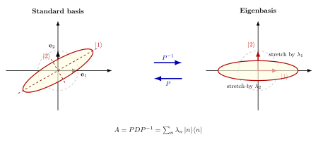

对角化与谱分解 — $H = \sum E_n |n\rangle\langle n|$ 凭什么?
翻开任何一本 QM 教科书, 第三章你都会看到这样一句话: "由于 $H$ 是厄米的, 我们可以用它的本征态作完备基, 写 $H = \sum_n E_n |n\rangle\langle n|$". 接着时间演化算符就被进一步写成 $U(t) = e^{-iHt/\hbar} = \sum_n e^{-iE_n t/\hbar}|n\rangle\langle n|$, 然后整个 QM 的动力学就靠这一招展开. 但是 — 凭什么? 一个矩阵被指数化是什么意思? 一个算符 "等于" 一堆投影算符的加权和又是什么意思? 上一节我们刚搞清本征值与本征向量是什么, 这一节就要把这一锅汤喝完: 把整个算符 $A$ 拆成本征量的语言, 这一步叫对角化; 把它写成投影算符之和, 这一步叫谱分解; 进一步把任何函数 $f$ 作用到算符上, 这一步叫算符函数演算 (functional calculus). 三步合一, 就是 QM 与统计力学的全部代数地基.
一、对角化: 把矩阵旋到它的本征基里去
先把对角化的定义写清楚.
定义 (1) — 可对角化矩阵. 设 $A$ 是 $n\times n$ 矩阵. 若存在可逆矩阵 $P$ 与对角矩阵 $D=\mathrm{diag}(\lambda_1,\ldots,\lambda_n)$, 使得
$$A = P D P^{-1}, \qquad \text{即 } P^{-1} A P = D, \tag{1}$$
则称 $A$ 可对角化. 此时 $D$ 的对角元 $\lambda_i$ 是 $A$ 的本征值, $P$ 的第 $i$ 列是对应的本征向量 $|v_i\rangle$.
怎么读这一行? $P$ 是把 "标准基" 翻译到 "本征基" 的换基矩阵. $A$ 在标准基下看上去是一个杂乱的方阵 — 把基底换到本征基后, 它就只剩对角元 — 也就是说, 在本征基里看, $A$ 的全部作用就是把第 $i$ 个基向量伸缩 $\lambda_i$ 倍, 不再混合任何方向. 这是上一节本征向量定义 $A|v\rangle=\lambda|v\rangle$ 的几何完整版: 我们不仅有一些不动方向 (本征向量), 这些方向还能拼成一组完整的基, 整个算符 $A$ 在这组基里彻底解耦成 $n$ 个独立的一维伸缩.
验证 (1) 是简单的代数. 设 $A|v_i\rangle = \lambda_i |v_i\rangle$, 把 $|v_i\rangle$ 作为列拼成矩阵 $P=[|v_1\rangle, \ldots, |v_n\rangle]$, 那么 $AP$ 的第 $i$ 列是 $A|v_i\rangle = \lambda_i|v_i\rangle$, 而 $PD$ 的第 $i$ 列也是 $\lambda_i|v_i\rangle$. 所以 $AP = PD$, 即 $A = PDP^{-1}$ — 前提是 $P$ 可逆, 这等于本征向量线性无关.
到这一步, "可对角化" 就被翻译成了一个干净的代数条件: $A$ 有 $n$ 个线性无关的本征向量.
二、判据: 几何重数 = 代数重数
什么时候有 $n$ 个线性无关的本征向量? 这才是关键.
对每个本征值 $\lambda$, 我们定义两个数:
- 代数重数 $a(\lambda)$: $\lambda$ 在特征多项式 $\det(A-\lambda I)=0$ 中作为根的重数.
- 几何重数 $g(\lambda)$: 本征空间 $\ker(A-\lambda I)$ 的维数 — 即对应这个本征值的线性无关本征向量个数.
一个一般的线性代数定理是 $1 \le g(\lambda) \le a(\lambda)$. 几何重数永远 $\ge 1$ (本征值至少对应一个本征向量), 永远 $\le$ 代数重数. 而对角化定理就是:
定理 (2) — 对角化判据. $A$ 可对角化 当且仅当 对每个本征值 $\lambda$, 几何重数等于代数重数, 即 $g(\lambda) = a(\lambda)$.
$\sum_\lambda a(\lambda) = n$ 是特征多项式的次数 (在复数域上算重根) 总是成立的, 所以条件 $\sum_\lambda g(\lambda) = n$ 等价于条件 (2). 这一条件等价于 "本征空间的维数加起来填满整个 $\mathbb{C}^n$", 也就等于 "存在一组本征基".
什么时候这条件失败? 经典反例:
$$J = \begin{pmatrix} \lambda & 1 \\ 0 & \lambda \end{pmatrix}.$$
它的特征多项式是 $(\lambda - x)^2$, 唯一本征值 $\lambda$ 代数重数 $a = 2$. 但解 $(J-\lambda I)|v\rangle = 0$ 给出 $v_2 = 0$, 本征空间一维, 几何重数 $g = 1 \lt 2$. $J$ 不能对角化. 这就是Jordan 块 — 整个不可对角化矩阵的标准模型, 任何不可对角化矩阵都同构于 Jordan 块的直和 (Jordan 标准型). 几何上 $J$ 表示的不是纯伸缩, 而是 "伸缩 + 一点剪切", 剪切方向上没有第二个不动方向, 所以你找不到第二组本征基把它拆开.
但是 — 这是本节的核心 — 在物理里我们最关心的两类算符 (厄米与幺正) 永远都可对角化. Jordan 块在物理里只在某些非厄米的、衰减系统的有效 Hamiltonian (例如非 Hermitian 磁化模型的 exceptional point) 才偶尔出现, 标准 QM 里它根本不来.
三、谱定理: 厄米算符 = 投影算符的加权和
现在我们走到本节的核心. 厄米矩阵的特殊地位是: 它不仅可以对角化, 还可以用幺正矩阵 $U$ 对角化 — 这等价于本征向量两两正交 (而不仅仅是线性无关).
定理 (3) — 谱定理 (有限维, 厄米情形). 设 $A$ 是 $n\times n$ 厄米矩阵 ($A^\dagger = A$). 则:
- $A$ 的本征值全为实数;
- 不同本征值对应的本征向量自动正交;
- 存在一组幺正矩阵 $U$ ($U^\dagger U = I$) 与对角矩阵 $D$ (实对角元) 使 $A = U D U^\dagger$;
- 等价地, $A$ 可写成正交投影算符的加权和:
$$A = \sum_n \lambda_n P_n, \qquad P_n = |n\rangle\langle n|, \tag{2}$$
其中 $\{|n\rangle\}$ 是 $A$ 的标准正交本征基, 投影算符满足 $P_n^2 = P_n$ (幂等), $P_n^\dagger = P_n$ (自伴), $\sum_n P_n = I$ (完备).
证明的关键三步, 都不长.
(i) 本征值实. 设 $A|v\rangle = \lambda|v\rangle$, $\langle v|v\rangle = 1$. 取共轭转置: $\langle v| A^\dagger = \overline{\lambda}\langle v|$. 因 $A^\dagger = A$, 这就是 $\langle v|A = \overline{\lambda}\langle v|$. 用 $|v\rangle$ 右乘第二式: $\langle v|A|v\rangle = \overline{\lambda}$. 用 $\langle v|$ 左乘第一式: $\langle v|A|v\rangle = \lambda$. 比较: $\lambda = \overline{\lambda}$, 即 $\lambda \in \mathbb{R}$.
(ii) 不同本征值的本征向量正交. $A|v_1\rangle=\lambda_1|v_1\rangle$, $A|v_2\rangle=\lambda_2|v_2\rangle$, $\lambda_1 \ne \lambda_2$. 同样用厄米性: $\langle v_2|A|v_1\rangle = \lambda_1 \langle v_2|v_1\rangle$ 也 $= \lambda_2\langle v_2|v_1\rangle$ (后者从 $A|v_2\rangle=\lambda_2|v_2\rangle$ 取共轭得 $\langle v_2|A=\lambda_2\langle v_2|$, 这里用了 $\lambda_2$ 实). 所以 $(\lambda_1-\lambda_2)\langle v_2|v_1\rangle = 0$, 由于 $\lambda_1\ne\lambda_2$, 得 $\langle v_2|v_1\rangle=0$.
(iii) 几何重数 = 代数重数. 这一步标准证法是在 $A$ 的不变子空间上归纳: 取一个本征向量 $|v_1\rangle$, 它生成的一维子空间 $V_1$ 是 $A$-不变的, 其正交补 $V_1^\perp$ 也由厄米性自动 $A$-不变 (因为 $\langle v_1| A |w\rangle = \langle Av_1|w\rangle = \lambda_1\langle v_1|w\rangle = 0$ 对 $w\perp v_1$); 在 $V_1^\perp$ 上限制 $A$ 仍然厄米, 维数减一, 归纳下去就能拼出 $n$ 个正交本征向量. 这就保证了 $\sum g(\lambda) = n$, 即对角化条件 (2) 满足.
把 $|n\rangle$ 当作正交归一基, 完备性 $\sum_n |n\rangle\langle n| = I$ 不过是在新基下展开恒等算符的一种写法. 用它两边夹 $A$:
$$A = I\cdot A \cdot I = \sum_{m,n} |m\rangle\langle m|A|n\rangle\langle n| = \sum_{m,n} \lambda_n \delta_{mn}|m\rangle\langle n| = \sum_n \lambda_n |n\rangle\langle n|,$$
这正是 (2). 所谓 "谱分解", 就是把算符按它自己的本征基重新写一遍. 它不是新内容, 是一种坐标选择 — 但是选得最好的那种坐标.

四、算符函数演算: 怎么把 $\exp$ 套到一个矩阵上
有了谱分解 (2), 一个新的代数操作就立刻被定义了: 算符函数. 设 $f$ 是定义在 $A$ 的本征值上的标量函数. 那么
$$f(A) := \sum_n f(\lambda_n) P_n = \sum_n f(\lambda_n) |n\rangle\langle n|. \tag{3}$$
这一定义有两个理由站得住: 一, 当 $f$ 是多项式 $f(x)=c_0+c_1 x+c_2 x^2+\cdots$ 时, 直接代 $A$ 进去 $f(A)=c_0 I+c_1 A+c_2 A^2+\cdots$ 与 (3) 一致, 因为 $A^k = \sum_n \lambda_n^k P_n$ (用 $P_n P_m = \delta_{nm} P_n$ 验证). 二, 当 $f$ 可由幂级数展开 (例如 $e^x$, $\sin x$, $\log x$ 在合适定义域内), (3) 与代级数一致, 是同一个对象的两种等价写法.
定义 (3) 的好处是: 不必去算无穷级数, 只要算 $A$ 的本征值, 然后逐个把 $f$ 套上即可. 这是物理学使用谱分解的核心动机.
具体计算: $\sigma_x$ 的指数. Pauli 矩阵
$$\sigma_x = \begin{pmatrix} 0 & 1 \\ 1 & 0 \end{pmatrix}.$$
它的特征多项式 $\det(\sigma_x - \lambda I) = \lambda^2 - 1$, 本征值 $\lambda_\pm = \pm 1$. 解本征向量:
$\lambda_+ = 1$: $\sigma_x|+\rangle = |+\rangle$ 给 $|+\rangle = \frac{1}{\sqrt{2}}(1, 1)^T$.
$\lambda_- = -1$: $\sigma_x|-\rangle = -|-\rangle$ 给 $|-\rangle = \frac{1}{\sqrt{2}}(1, -1)^T$.
验证正交归一: $\langle +|-\rangle = \frac{1}{2}(1-1)=0$, 是. 写出投影算符
$$P_+ = |+\rangle\langle +| = \frac{1}{2}\begin{pmatrix} 1 & 1 \\ 1 & 1 \end{pmatrix}, \qquad P_- = |-\rangle\langle -| = \frac{1}{2}\begin{pmatrix} 1 & -1 \\ -1 & 1 \end{pmatrix}.$$
验证 $P_+ + P_- = I$, $P_+ - P_- = \sigma_x$ (即 $\sigma_x = P_+ - P_-$, 这就是 (2) 在 $\lambda=\pm 1$ 上的实例). 现在算 $e^{-i\theta\sigma_x}$ 这个 QM 里要紧的对象 (它就是自旋 $\hbar/2$ 在 $x$ 方向磁场里转 $2\theta$ 角度的算符):
$$e^{-i\theta\sigma_x} = e^{-i\theta(+1)}P_+ + e^{-i\theta(-1)}P_- = e^{-i\theta}P_+ + e^{+i\theta}P_-.$$
把投影矩阵代入:
$$e^{-i\theta\sigma_x} = \frac{e^{-i\theta}}{2}\begin{pmatrix}1&1\\1&1\end{pmatrix} + \frac{e^{i\theta}}{2}\begin{pmatrix}1&-1\\-1&1\end{pmatrix} = \begin{pmatrix} \cos\theta & -i\sin\theta \\ -i\sin\theta & \cos\theta \end{pmatrix},$$
用 $\cos\theta = (e^{i\theta}+e^{-i\theta})/2$, $-i\sin\theta = (e^{-i\theta}-e^{i\theta})/2$ 化简. 这就是著名的 $e^{-i\theta\sigma_x} = \cos\theta\cdot I - i\sin\theta\cdot\sigma_x$ — QM 里直接套用幂级数展开外加 $\sigma_x^2=I$ 也能得到, 但谱分解的路径更结构性: 它把 "为什么会出现 $\cos\theta, \sin\theta$" 解释成 "因为本征值是 $\pm 1$, 所以 $e^{-i\theta\lambda}$ 在 $\pm 1$ 上的两个值, 加上正负投影的合成, 自然组成了三角函数". 算符级别的 Euler 公式.
更一般地, 对任何厄米 $H$, 时间演化算符
$$U(t) = e^{-iHt/\hbar} = \sum_n e^{-iE_n t/\hbar}|n\rangle\langle n|$$
就是把每个本征态独立地以频率 $E_n/\hbar$ 转一个相位; 整个 QM 的动力学不过是 "每个本征模独立旋相位, 然后线性叠加". 这一句话就是 Stone 定理 (无限维谱定理) 在有限维下的形象版.
五、物理回响与无限维的预告
谱定理是连接 "线性代数" 与 "物理学多个分支" 的总枢纽:
- QM 测量与时间演化: 卷一/卷二 QM 部分, 测量算符 $A=\sum_n a_n P_n$ 的谱分解就是 Born 规则的代数底子 — 测得 $a_n$ 的概率为 $\langle\psi|P_n|\psi\rangle = |\langle n|\psi\rangle|^2$. 时间演化 $U(t)=e^{-iHt/\hbar}$ 通过 (3) 直接计算.
- 统计力学的密度矩阵: 卷二《玻色费米》中 Boltzmann 因子 $\rho = e^{-\beta H}/Z$ 是算符函数的典型应用. 在 $H$ 的本征基里 $\rho_{nn}=e^{-\beta E_n}/Z$ — 经典 Boltzmann 分布. 配分函数 $Z = \Tr e^{-\beta H} = \sum_n e^{-\beta E_n}$ 把矩阵的迹通过谱分解直接化简成本征值的和.
- QFT 传播子: 卷三《传播子》中 Feynman 传播子的 Källén-Lehmann 表示 $G_F(E) = \sum_n |n\rangle\langle n|/(E-E_n+i\epsilon)$ 同样是 (2) 的应用 — 把 $1/(E-H+i\epsilon)$ 这个算符做谱分解, 极点分别落在每个本征能量 $E_n$ 上. 物理上这告诉你: 传播子的极点就是粒子的能谱.
- 正规模分析: 卷一耦合振子求正规模, 就是把动能矩阵+势能矩阵的"广义本征问题"对角化; 每个本征模独立振动, 频率是本征值的开方. 一切线性振动系统的去耦, 都是谱分解.
历史上, 有限维谱定理在 19 世纪初就被弄清: Cauchy 1830 年代证明了对称矩阵 (实厄米) 的本征值实、本征向量正交; 紧跟着 Jacobi (1846) 给出了用一系列 Givens 旋转把矩阵对角化的具体算法; Sylvester 1850s 引入了 "本征值的代数与几何重数" 的术语. 但物理学要的不是有限维 — QM 的算符 $\hat{x}, \hat{p}$ 有连续谱, 厄米但本征值充满整个实轴. 把 (2) 推到无限维 Hilbert 空间, 处理连续谱 (积分代替求和) 与离散谱共存的情形, 是 von Neumann 1929 年在 Göttingen 完成的 "Mathematische Begründung der Quantenmechanik" — 那篇论文把 Heisenberg 1925 年的矩阵力学和 Schrödinger 1926 年的波动力学都装进了 Hilbert 空间的统一框架, 谱定理是核心. von Neumann 给出的形式是用谱测度 $E_A$ 写的:
$$A = \int_\sigma \lambda \, dE_A(\lambda),$$
把求和 $\sum_n \lambda_n P_n$ 换成 Stieltjes 积分; 当谱离散时它退化回 (2), 当谱连续时它成为 $\hat{x} = \int x\,|x\rangle\langle x|\,dx$ 这样的分解. 这一推广是第 22 节的主题, 我们这里只点到为止.
顺便说一句 von Neumann 当时的处境: Heisenberg 与 Schrödinger 在 1926 年已分别证明了两套力学等价, 但形式上一个是无穷阶矩阵, 一个是偏微分方程, 物理学家想把它们都 "塞进" 同一个数学框架. von Neumann 那时刚 26 岁, 受 Hilbert 直接指导, 用泛函分析告诉物理学家: 那个框架就叫 Hilbert 空间, 那个统一定理就是谱定理. 之后整个 QM 的数学严格化都建立在他这一篇论文上.
小结
谱分解 (2) $A=\sum_n \lambda_n |n\rangle\langle n|$ 是把厄米算符拆成本征量的语言, 是一切 "在本征基里求解物理" 的代数地基. 卷一卷二 QM 的时间演化 $U(t)=e^{-iHt/\hbar}$, 卷二统计力学的 $\rho=e^{-\beta H}/Z$, 卷三 QFT 的传播子 $G_F = \sum_n|n\rangle\langle n|/(E-E_n+i\epsilon)$ — 全都直接来自算符函数演算 (3). 下一节我们换一个方向: 单一 Hilbert 空间已经不够了, 多粒子或多自由度系统需要把空间 "乘起来" — 这就是张量积, 也是纠缠 (entanglement) 这种纯量子现象的代数底子. 谱分解告诉我们怎么把一个空间内的算符切开, 张量积告诉我们怎么把多个空间合在一起.
▲